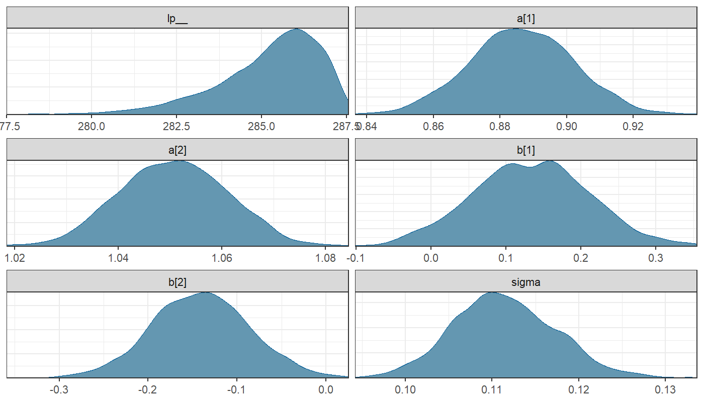

rethinking package:
cmdstanr package instead of
rstan
cmdstanr than rstan
ulam object
mdl, use mdl@cstanfit instead of
mdl@stanfit (see p. 290).precis() function operating on a model fitted by
ulam() are slightly different:
ess_bulk (Effective sample size) instead of
n_eff
rhat instead of Rhat4 for the metric of
how well the model has converged.rugged data set:
rugged: Topographic roughness of the terrainrpcgdp_2000: Per-capita GDP in 2000quap vs. ulam
quap calculates the posterior using a quadratic
approximation
ulam calculates the posterior using a
Hamiltonian Monte Carlo sampler.
quap but works with a greater
variety of prior and likelihood functions.ulam and stan
lst_rug <- alist(
log_gdp_std ~ dnorm(mu, sigma),
mu <- a[cid] + b[cid] * (rugged_std - 0.215),
a[cid] ~ dnorm(1, 0.1),
b[cid] ~ dnorm(0, 0.3),
sigma ~ dexp(1)
)dat_slim <- list(log_gdp_std = dd$log_gdp_std,
rugged_std = dd$rugged_std,
cid = as.integer(dd$cid))
mdl_rug_ulam <- ulam(lst_rug, data = dat_slim,
chains = 4, cores = 4)## Running MCMC with 4 parallel chains, with 1 thread(s) per chain...
##
## Chain 1 Iteration: 1 / 1000 [ 0%] (Warmup)
## Chain 1 Iteration: 100 / 1000 [ 10%] (Warmup)
## Chain 1 Iteration: 200 / 1000 [ 20%] (Warmup)
## Chain 1 Iteration: 300 / 1000 [ 30%] (Warmup)
## Chain 1 Iteration: 400 / 1000 [ 40%] (Warmup)
## Chain 1 Iteration: 500 / 1000 [ 50%] (Warmup)
## Chain 1 Iteration: 501 / 1000 [ 50%] (Sampling)
## Chain 1 Iteration: 600 / 1000 [ 60%] (Sampling)
## Chain 1 Iteration: 700 / 1000 [ 70%] (Sampling)
## Chain 1 Iteration: 800 / 1000 [ 80%] (Sampling)
## Chain 1 Iteration: 900 / 1000 [ 90%] (Sampling)
## Chain 1 Iteration: 1000 / 1000 [100%] (Sampling)## Chain 2 Iteration: 1 / 1000 [ 0%] (Warmup)
## Chain 2 Iteration: 100 / 1000 [ 10%] (Warmup)
## Chain 2 Iteration: 200 / 1000 [ 20%] (Warmup)
## Chain 2 Iteration: 300 / 1000 [ 30%] (Warmup)
## Chain 2 Iteration: 400 / 1000 [ 40%] (Warmup)
## Chain 2 Iteration: 500 / 1000 [ 50%] (Warmup)
## Chain 2 Iteration: 501 / 1000 [ 50%] (Sampling)
## Chain 2 Iteration: 600 / 1000 [ 60%] (Sampling)
## Chain 2 Iteration: 700 / 1000 [ 70%] (Sampling)
## Chain 2 Iteration: 800 / 1000 [ 80%] (Sampling)
## Chain 2 Iteration: 900 / 1000 [ 90%] (Sampling)
## Chain 2 Iteration: 1000 / 1000 [100%] (Sampling)## Chain 3 Iteration: 1 / 1000 [ 0%] (Warmup)
## Chain 3 Iteration: 100 / 1000 [ 10%] (Warmup)
## Chain 3 Iteration: 200 / 1000 [ 20%] (Warmup)
## Chain 3 Iteration: 300 / 1000 [ 30%] (Warmup)
## Chain 3 Iteration: 400 / 1000 [ 40%] (Warmup)
## Chain 3 Iteration: 500 / 1000 [ 50%] (Warmup)
## Chain 3 Iteration: 501 / 1000 [ 50%] (Sampling)
## Chain 3 Iteration: 600 / 1000 [ 60%] (Sampling)
## Chain 3 Iteration: 700 / 1000 [ 70%] (Sampling)
## Chain 3 Iteration: 800 / 1000 [ 80%] (Sampling)
## Chain 3 Iteration: 900 / 1000 [ 90%] (Sampling)
## Chain 3 Iteration: 1000 / 1000 [100%] (Sampling)
## Chain 4 Iteration: 1 / 1000 [ 0%] (Warmup)
## Chain 4 Iteration: 100 / 1000 [ 10%] (Warmup)
## Chain 4 Iteration: 200 / 1000 [ 20%] (Warmup)
## Chain 4 Iteration: 300 / 1000 [ 30%] (Warmup)
## Chain 4 Iteration: 400 / 1000 [ 40%] (Warmup)
## Chain 4 Iteration: 500 / 1000 [ 50%] (Warmup)
## Chain 4 Iteration: 501 / 1000 [ 50%] (Sampling)
## Chain 4 Iteration: 600 / 1000 [ 60%] (Sampling)
## Chain 4 Iteration: 700 / 1000 [ 70%] (Sampling)
## Chain 4 Iteration: 800 / 1000 [ 80%] (Sampling)
## Chain 4 Iteration: 900 / 1000 [ 90%] (Sampling)
## Chain 1 finished in 0.1 seconds.
## Chain 2 finished in 0.1 seconds.
## Chain 3 finished in 0.1 seconds.
## Chain 4 Iteration: 1000 / 1000 [100%] (Sampling)
## Chain 4 finished in 0.1 seconds.
##
## All 4 chains finished successfully.
## Mean chain execution time: 0.1 seconds.
## Total execution time: 0.8 seconds.Ulam creates this Stan model:
## data{
## vector[170] log_gdp_std;
## vector[170] rugged_std;
## array[170] int cid;
## }
## parameters{
## vector[2] a;
## vector[2] b;
## real<lower=0> sigma;
## }
## model{
## vector[170] mu;
## sigma ~ exponential( 1 );
## b ~ normal( 0 , 0.3 );
## a ~ normal( 1 , 0.1 );
## for ( i in 1:170 ) {
## mu[i] = a[cid[i]] + b[cid[i]] * (rugged_std[i] - 0.215);
## }
## log_gdp_std ~ normal( mu , sigma );
## }ulam
quap.log(), standardize(), …)
before calling ulam().ulam() it:
stan code for the model.stan to translate the stan model
into C++.ulam
chains: A chain is a sequence of samples.
cores: How many processor cores to use:
cores = 1, the chains execute sequentiallycores = chains, all chains execute in parallel
(faster).cores than
chains.precis shows:
ess_bulk: The effective sample size (smaller than
the actual number of samples because of autocorrelation)rhat: The Gelman-Rubin convergence diagnostic:
## Hamiltonian Monte Carlo approximation
## 2000 samples from 4 chains
##
## Sampling durations (seconds):
## chain_id warmup sampling total
## 1 1 0.05 0.03 0.09
## 2 2 0.05 0.04 0.09
## 3 3 0.05 0.05 0.10
## 4 4 0.05 0.04 0.08
##
## Formula:
## log_gdp_std ~ dnorm(mu, sigma)
## mu <- a[cid] + b[cid] * (rugged_std - 0.215)
## a[cid] ~ dnorm(1, 0.1)
## b[cid] ~ dnorm(0, 0.3)
## sigma ~ dexp(1)## mean sd 5.5% 94.5% rhat ess_bulk
## a[1] 0.89 0.02 0.86 0.91 1 2901.28
## a[2] 1.05 0.01 1.03 1.07 1 3186.68
## b[1] 0.13 0.08 0.01 0.26 1 2752.39
## b[2] -0.14 0.05 -0.23 -0.05 1 2340.66
## sigma 0.11 0.01 0.10 0.12 1 2788.01lp__ is the log of the posterior probability
density.

2 data observations
Very uninformative priors
Gives warning:
Warning: 87 of 2000 (4.0%) transitions ended with a divergence.
See https://mc-stan.org/misc/warnings for details.
## Hamiltonian Monte Carlo approximation
## 2000 samples from 4 chains
##
## Sampling durations (seconds):
## chain_id warmup sampling total
## 1 1 0.10 0.02 0.13
## 2 2 0.05 0.02 0.07
## 3 3 0.03 0.02 0.05
## 4 4 0.04 0.03 0.07
##
## Formula:
## y ~ dnorm(mu, sigma)
## mu <- alpha
## alpha ~ dnorm(0, 1000)
## sigma ~ dexp(1e-04)## mean sd 5.5% 94.5% rhat ess_bulk
## alpha -6.01 339.32 -446.5 415.13 1.01 231.84
## sigma 560.05 1436.09 19.6 2285.11 1.02 121.58ess_bulk: <200 effective samples out of
2000.sd: Huge standard deviations in posteriors.## Hamiltonian Monte Carlo approximation
## 2000 samples from 4 chains
##
## Sampling durations (seconds):
## chain_id warmup sampling total
## 1 1 0.03 0.02 0.05
## 2 2 0.02 0.02 0.04
## 3 3 0.02 0.02 0.04
## 4 4 0.03 0.02 0.05
##
## Formula:
## y ~ dnorm(mu, sigma)
## mu <- alpha
## alpha ~ dnorm(0, 10)
## sigma ~ dexp(1)## mean sd 5.5% 94.5% rhat ess_bulk
## alpha 0.10 1.35 -1.79 2.26 1.01 494.79
## sigma 1.62 0.91 0.68 3.22 1.01 485.01ess_bulk: almost 500 effective samples.sd: Much smaller.Model \[ \begin{align} y &\sim \text{Normal}(\mu, \sigma) \\ \mu &= \alpha_1 + \alpha_2 \\ \alpha_1 &\sim \text{Normal}(0, 1000) \\ \alpha_2 &\sim \text{Normal}(0, 1000) \\ \sigma &\sim \text{Exponential}(1) \end{align} \]
Error message:
Warning: 1522 of 2000 (76.0%) transitions hit the maximum treedepth limit of 10.
See https://mc-stan.org/misc/warnings for details.## Hamiltonian Monte Carlo approximation
## 2000 samples from 4 chains
##
## Sampling durations (seconds):
## chain_id warmup sampling total
## 1 1 1.07 1.11 2.19
## 2 2 1.09 1.09 2.18
## 3 3 0.98 1.16 2.14
## 4 4 1.05 1.15 2.20
##
## Formula:
## y ~ dnorm(mu, sigma)
## mu <- a1 + a2
## a1 ~ dnorm(0, 1000)
## a2 ~ dnorm(0, 1000)
## sigma ~ dexp(1)## mean sd 5.5% 94.5% rhat ess_bulk
## a1 -84.92 374.08 -702.21 519.46 2.36 4.99
## a2 85.11 374.08 -519.34 702.33 2.36 4.99
## sigma 1.04 0.06 0.95 1.14 1.06 89.58Error message:
Warning: 14 of 2000 (1.0%) transitions hit the maximum treedepth limit of 10.
See https://mc-stan.org/misc/warnings for details.## Hamiltonian Monte Carlo approximation
## 2000 samples from 4 chains
##
## Sampling durations (seconds):
## chain_id warmup sampling total
## 1 1 0.38 0.44 0.82
## 2 2 0.36 0.56 0.91
## 3 3 0.40 0.37 0.77
## 4 4 0.38 0.40 0.78
##
## Formula:
## y ~ dnorm(mu, sigma)
## mu <- a1 + a2
## a1 ~ dnorm(0, 10)
## a2 ~ dnorm(0, 10)
## sigma ~ dexp(1)## mean sd 5.5% 94.5% rhat ess_bulk
## a1 0.12 7.08 -11.01 11.63 1.01 543.50
## a2 0.06 7.08 -11.45 11.15 1.01 544.07
## sigma 1.04 0.07 0.93 1.16 1.00 762.89## Hamiltonian Monte Carlo approximation
## 2000 samples from 4 chains
##
## Sampling durations (seconds):
## chain_id warmup sampling total
## 1 1 0.02 0.01 0.03
## 2 2 0.01 0.01 0.03
## 3 3 0.01 0.01 0.03
## 4 4 0.02 0.01 0.03
##
## Formula:
## y ~ dnorm(mu, sigma)
## mu <- a
## a ~ dnorm(0, 10)
## sigma ~ dexp(1)## mean sd 5.5% 94.5% rhat ess_bulk
## a 0.19 0.10 0.03 0.36 1 1439.69
## sigma 1.04 0.08 0.92 1.16 1 1444.62